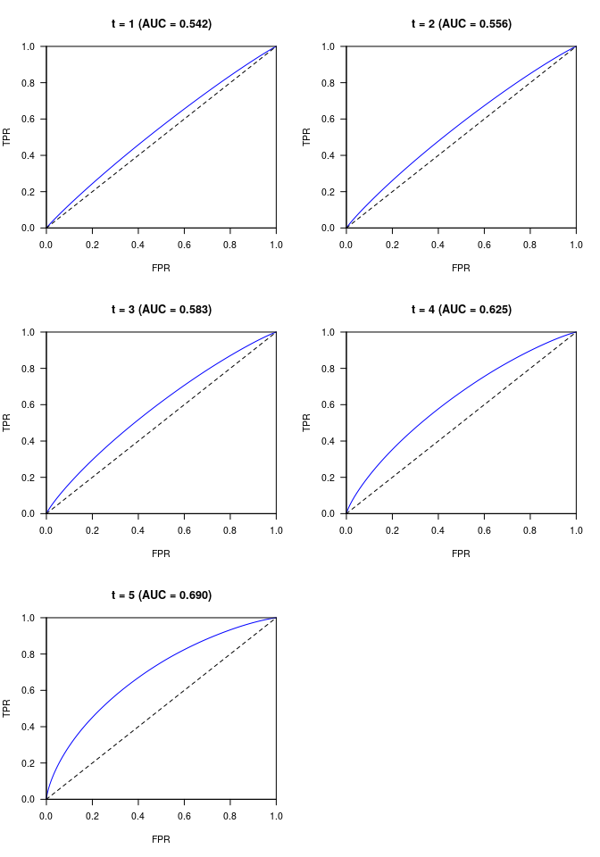

NOTE: WORK IN PROGRESS!
GitHub Repository: https://github.com/celehs/misclassification/
Install development version from GitHub.
# install.packages("remotes") devtools::install_github("celehs/misclassification")
Load the package into R.
library(misclassification)
source("examples/mkdata.R")
beta <- 1.2 lambda0 <- 0.01 * (1:5) theta <- c(0.9, 0.88, 0.85, 0.8, 0.75) phi <- rep(0.95, 5) n <- 5000 data <- mkdata( beta = beta, lambda0 = lambda0, theta = theta, phi = phi, n = n, seed = 1) data.table::data.table(data)
## t0 d0 z
## 1: 2 1 2.937355
## 2: 3 1 3.018364
## 3: 3 1 2.916437
## 4: 2 1 3.159528
## 5: 2 1 3.032951
## ---
## 4996: 2 1 3.016255
## 4997: 3 1 3.098074
## 4998: 5 1 2.930786
## 4999: 5 0 2.999651
## 5000: 4 1 3.017158with(data, addmargins(table(d0, t0)))
## t0
## d0 1 2 3 4 5 Sum
## 0 0 0 0 0 177 177
## 1 1448 1725 1119 420 111 4823
## Sum 1448 1725 1119 420 288 5000# sensitivity unknown, specificity fixed start <- c(beta, qlogis(lambda0), qlogis(theta)) # 1 + 5 + 5 fit <- optim( par = start, fn = function(par) { -loglik( beta = par[1], lambda0 = plogis(par[1 + 1:5]), theta = plogis(par[6 + 1:5]), # sensitivity phi = phi, # specificity t0 = data$t0, d0 = data$d0, X = data$z) }, method = "BFGS") # convergence (An integer code. 0 indicates successful completion) fit$convergence
data.frame(name = c("beta", paste0("lambda0_", 1:5), paste0("theta_", 1:5)), truth = c(start[1], plogis(start[-1])), param = round(c(fit$par[1], plogis(fit$par[-1])), 3))
## name truth param
## 1 beta 1.20 1.244
## 2 lambda0_1 0.01 0.007
## 3 lambda0_2 0.02 0.016
## 4 lambda0_3 0.03 0.026
## 5 lambda0_4 0.04 0.035
## 6 lambda0_5 0.05 0.054
## 7 theta_1 0.90 0.958
## 8 theta_2 0.88 0.137
## 9 theta_3 0.85 0.030
## 10 theta_4 0.80 0.011
## 11 theta_5 0.75 0.013# AUC at estimated parameters est <- acc_est( Z = data$z, beta = fit$par[1], lambda0 = plogis(fit$par[1 + 1:5])) est$AUC
# AUC at true parameters acc_est( Z = data$z, beta = beta, lambda0 = lambda0)$AUC
par(mfrow = c(3, 2)) for (m in 1:5) { x <- c(0, est$FPR[, m]) y <- c(0, est$TPR[, m]) plot(x, y, las = 1, type = "s", col = "blue", xaxs = "i", yaxs = "i", xlab = "FPR", ylab = "TPR", main = paste0("t = ", m, " (AUC = ", sprintf("%.3f", est$AUC[m]), ")")) abline(a = 0, b = 1, lty = 2) }
